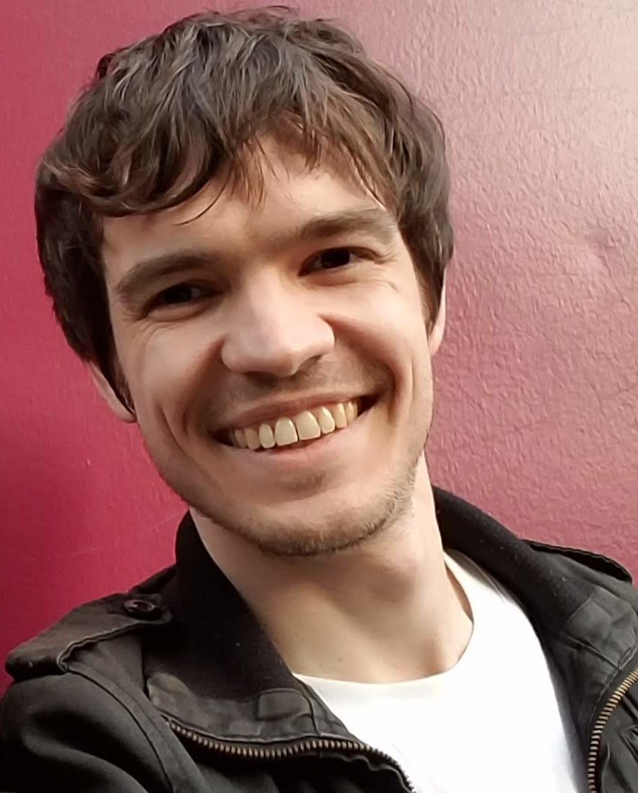

Department of Linguistics, Rutgers University
Rm 205A, 18 Seminary Pl, New Brunswick, NJ
adam.jardine@rutgers.edu
 I'm an Associate Professor at the Rutgers Department of Linguistics. My research uses computational and mathematical approaches to study fundamental questions in phonological theory.
|
|
|
Tues 2-3pm and by appointment.